FITcomparer – Guide
Compare two to six activities from your Garmin watch or bike computer side by side: metrics, route, progression, and, if you like, as an MP4 video. Everything runs in your browser, and your files are not uploaded.
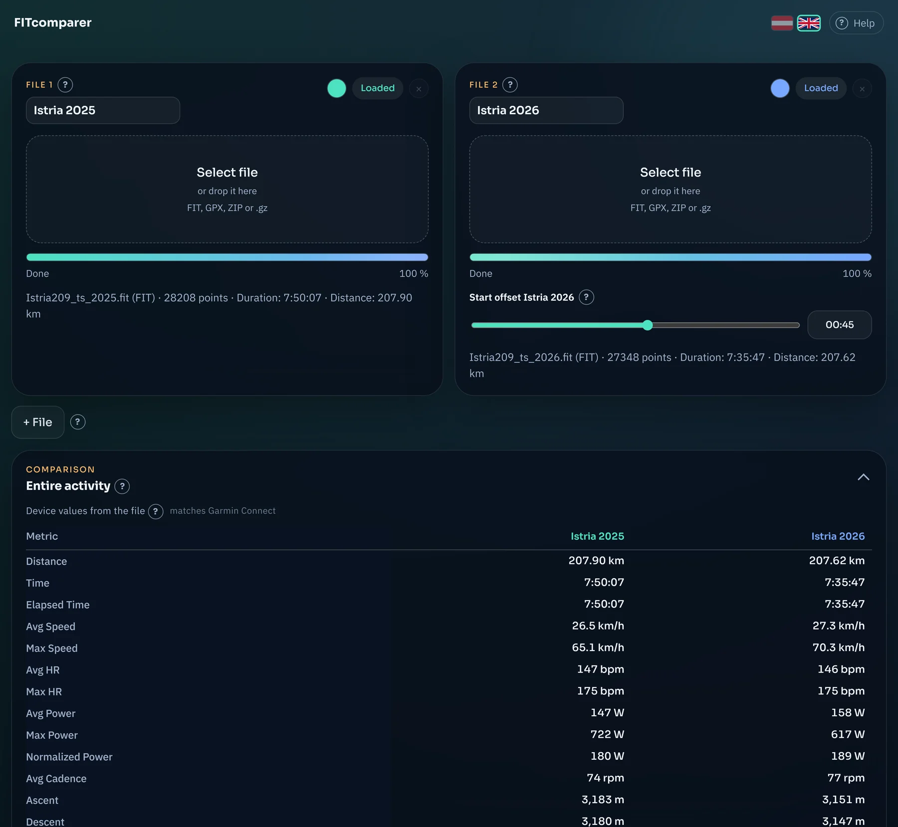
What is FITcomparer good for?
Typical use cases:
- the same route in different years: Are you faster, did you have more or less power?
- a race or a ride with friends: Who was where, and how did the heart rates compare?
- two devices on one ride: How far do they differ from each other?
- a small graphic to share: your comparison as a video, also in portrait format for stories.
Next to many controls you will find a small . Hover over it with the mouse, tap it (on your phone), or reach it with the Tab key: A short explanation for exactly that element appears.
Quick start in four steps
- Get your files. Export your activities from Garmin Connect on the website, as described in the next section. You get one ZIP each. Other platforms such as Strava, Wahoo, or COROS work too, see Files from other platforms.
- Load. Under “File 1”, click “Select file” and choose the ZIP (or the .fit file). You don’t need to unzip the ZIP.
- Second file. Do the same for “File 2”. Add more activities with “+ File” (up to six).
- Compare. The metrics appear side by side right away. With playback, both activities run across the map at the same time, and in the graph you can drag out sections.
Getting files from Garmin Connect (web)
Website only. Exporting single activities is part of the web interface of Garmin Connect at connect.garmin.com, ideally on a computer. The Garmin Connect app does not offer it.
- Sign in at connect.garmin.com in your browser and open the activity you want to compare.
- In the toolbar below the activity name (heart, pencil, star, group), click the gear icon (marker 1).
- In the menu, choose “Export File” (marker 2).
- Your browser downloads a ZIP. The file name is the activity number, for example
24589869683.zip. - Load this ZIP into FITcomparer. It does not need to be unzipped. Repeat the steps for each additional activity.
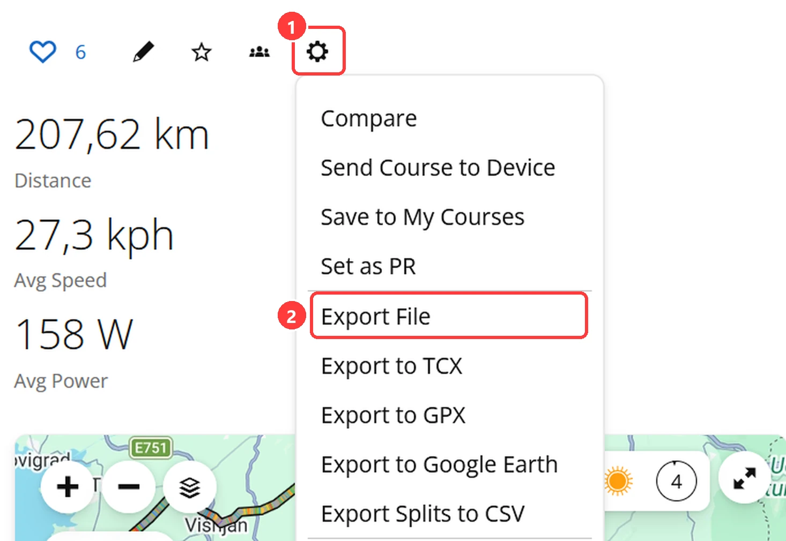
Which formats does FITcomparer understand?
| Format | Where from | What happens |
|---|---|---|
| ZIP from “Export File” | Gear icon → Export File | Loaded directly. Full analysis: device values and calculated values. |
| FIT (unpacked) | from the ZIP | Same as the ZIP. |
| .fit.gz / .gpx.gz | e.g. Strava full export | Loaded directly, also from inside a ZIP. Then handled like FIT or GPX. |
| GPX | Gear icon → Export to GPX | Works, but without device values, only calculated values. Heart rate, cadence, and power appear only if they are in the file. |
| TCX | Gear icon → Export to TCX | Not supported. Use “Export File” instead. |
| Full account export | Garmin account → Export data | Not loaded directly (contains many activities and further ZIPs). Unzip the archive and load the .fit file you want, or export the activity individually. |
If a ZIP contains several activities, FITcomparer stops with an error message instead of guessing.
Files from other platforms
Garmin Connect is just the example used to explain this guide. FIT is an open standard. Watches and bike computers from Wahoo, COROS, Suunto, Polar, Hammerhead, and others also write FIT files with the same structure: a summary of the activity and the per-second values. FITcomparer therefore reads them the same way, with device values and calculated values.
Rule of thumb: Look in the platform for a FIT export or for “Export Original”, because that is the unchanged file from your device. GPX works too, but contains no device values.
| Platform | How to get the file | Note |
|---|---|---|
| Strava | Web only: Open the activity and choose “Export Original” in the “…” menu. Alternatively, append /export_original to the activity’s address. | Usually FIT, exactly as uploaded. “Export GPX” gives only the route. In the full export, the files are often .fit.gz, which FITcomparer loads directly. |
| Wahoo | In the Wahoo app, open the workout, tap Share at the top right, and choose “Share .fit file”. | FIT |
| COROS | In the app, open the activity and choose the export as FIT. The Training Hub (web) offers the export of multiple activities. | Single: FIT, GPX, TCX, or KML. The bulk export gives FIT or TCX. |
| Suunto | In the Suunto app, open the workout, tap the three dots at the top right, and choose FIT. | Without GPS data there is no GPX export, FIT always works. |
| Polar Flow | On the web, open the session in the diary and choose the FIT file from the “Export” menu at the top right. | Also GPX, TCX, and CSV. For large sessions, choose the ZIP variant, FITcomparer unpacks it. |
| Hammerhead Karoo | In the dashboard under “Rides”, click the three dots of the ride and choose “Download FIT”. Or copy the file from the device’s “FitFiles” folder via cable. | FIT |
| Zwift | On zwift.com, download the FIT file from the activity. Locally, they are stored under Documents\Zwift\Activities. | FIT |
| Apple Watch | Apple offers no export of its own. An extra app like HealthFit converts workouts into FIT files. | The data comes from Apple Health, not from a sports device, so device values may differ. |
| Komoot and similar | Usually only a GPX export. | Only calculated values, no device values. |
Status of this information: The menu names come from the providers’ help pages, I did not click through every platform myself. They change occasionally. By “device values”, FITcomparer means the summary that the device writes into the file. Whether the platform shows the same numbers depends on the platform. Garmin Connect is the reference that was used for checking.
Step-by-step usage
Load, name, and color files
Each activity has its own card. You can use up to six cards in total, and at least two always remain.
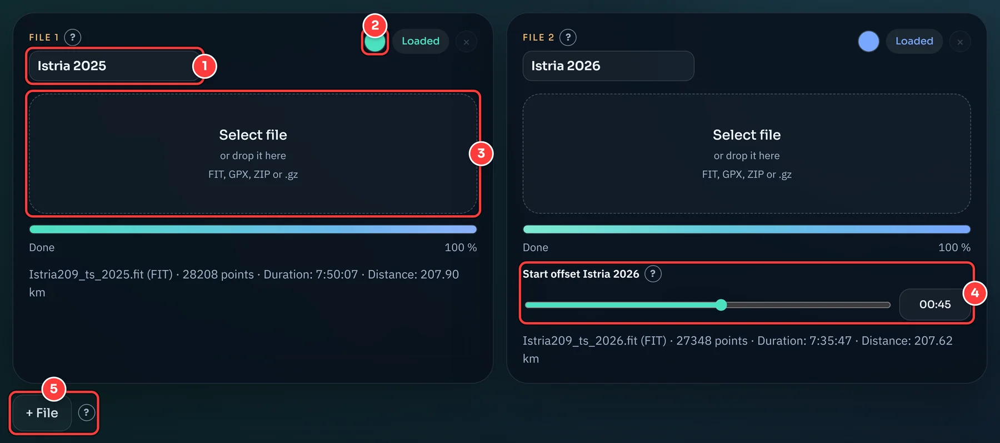
- Display name. Here you can rename the activity freely, for example “Tobi 2025” instead of the file name. The name carries through everywhere: into the tables, the graph, the map legend, and the exported video.
- Color. Click the dot and pick the color. It applies to the map, graph, table headers, and video. The color stays with the file, even if you remove another card.
- Select file. Click the area or simply drop the file onto it. FIT, GPX, the ZIP from Garmin Connect, or a .gz file.
- Start offset. Appears from the second card on, see below.
- + File adds another activity. With the × on a card, you remove it again.
Start offset: compensate for different start times
In races, events, or group rides, the recordings rarely begin at the same moment: One watch starts earlier, another later. Without compensation, one activity would run away from the other during playback.
With the Start offset, you shift an activity relative to File 1, which serves as the reference and stays unchanged. The value states how much later (positive) or earlier (negative) the file begins on the shared time axis.
Example: File 1 started at the starting gun. Your bike computer in File 2 was only switched on 45 seconds later. Set the offset for File 2 to 00:45, and both start at the starting line at the same time. Use a distinctive spot as a guide, such as the first intersection or the first climb, and shift until the markers on the map stay together.
The slider covers ±10 minutes. In the text field next to it, you can set values more precisely and also further out: mm:ss or just seconds, negative with a leading minus, for example -02:30.
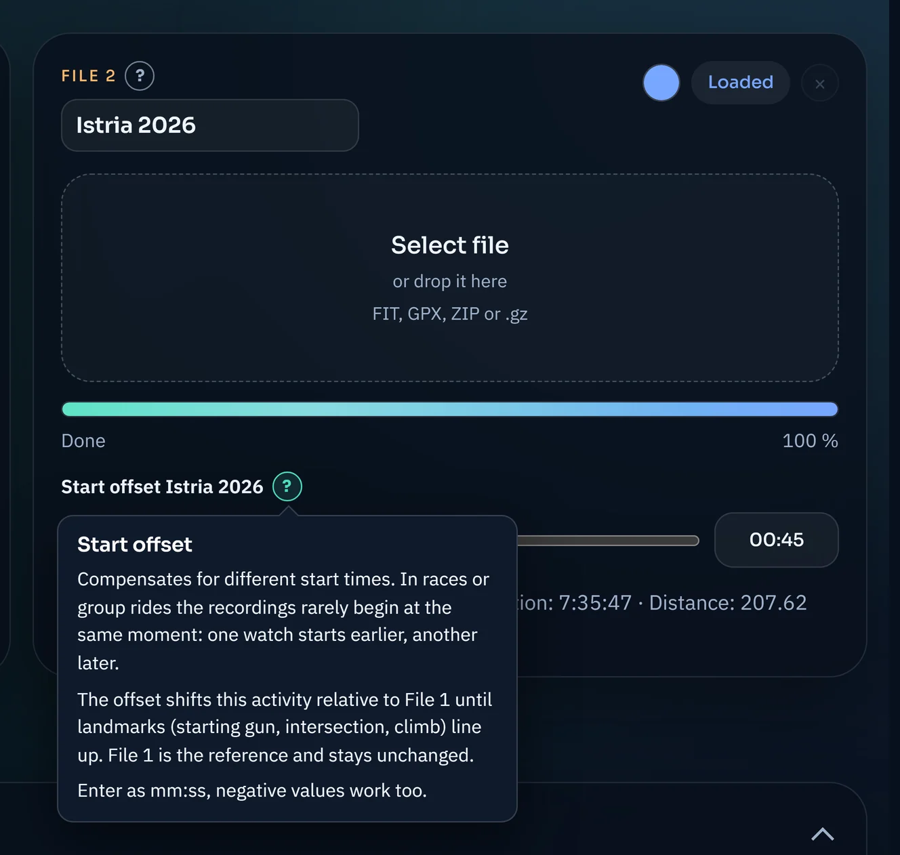
The comparison tables
The “Entire activity” panel shows the metrics of all files side by side: Rows are the measurements, columns are the files. There are two tables. With the arrow at the top right, you collapse the whole panel, and the lower table can also be collapsed on its own.
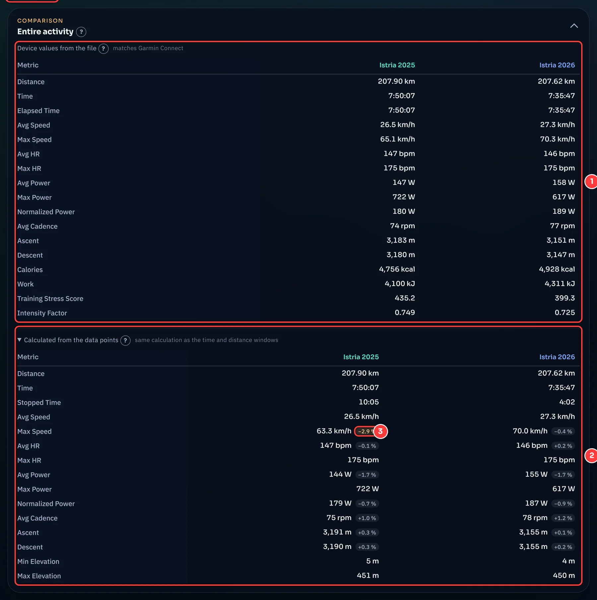
- Device values from the file. Your device wrote these numbers into the file itself at the end of the activity. They match exactly what Garmin Connect shows. This table exists only for FIT files.
- Calculated from the data points. The same metrics, recalculated from the file’s per-second values. This exact calculation is also behind the tables for time and distance windows, which exist for sections.
- Deviation. The small badge shows how far the calculated value deviates from the device value. Orange means more than 2%. Why deviations occur is explained in the measurement methodology section.
Playback
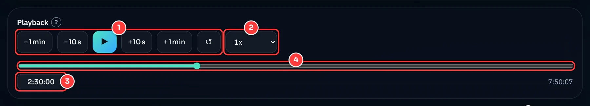
- Skip buttons, play, and reset. − 1 min, − 10 s, + 10 s, and + 1 min jump in time. If playback is running, it keeps running afterwards. ↺ jumps to the start.
- Speed from 0.5× to 500×. It determines how fast the markers move on the map.
- Time field. Type a time, for example
12:34,1:30:00, or just seconds, and confirm with Enter. - Timeline. Drag the slider to jump to any point.
Map and distance window
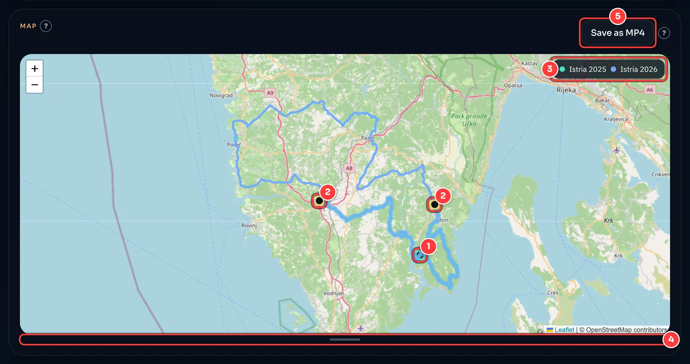
- Markers. They show where each activity is at the current time.
- Distance window. Click twice on the track (within about 30 pixels of the line), and a route section is created. The next click starts a new window.
- Legend. It sits inside the map and stays at the top right at any map size. This exact legend also appears in the video.
- Drag handle. Drag it down or up to change the height of the map (also with the arrow keys).
- Save as MP4, see below.
The distance window compares the same stretch of route for each file, even if the activities rode it at very different times. This is the big advantage over the plain time window.
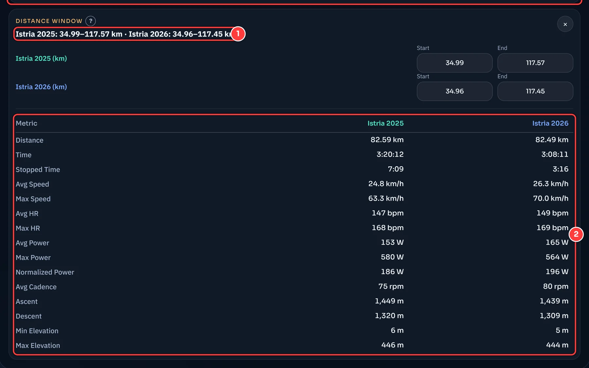
- The measured kilometers per file between your two clicks.
- The metrics of exactly this section for each file.
Graph and time window
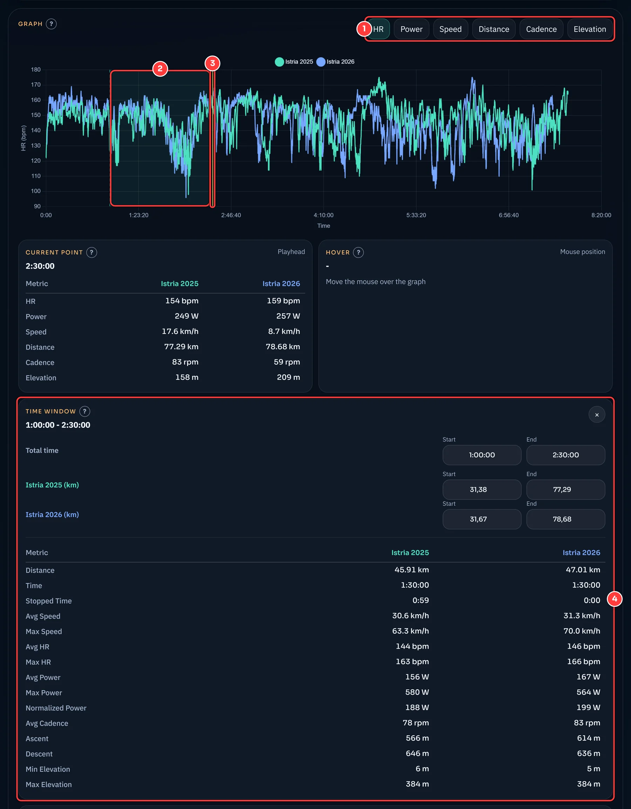
- Metric. Choose whether HR, power, speed, distance, cadence, or elevation is shown over time.
- Time window. Drag across the graph with the mouse to mark a section.
- Playhead. The yellow line is the current playback position.
- Time window panel. It shows the metrics of the section for each file. You can type the start and end exactly below, as a time or as kilometers per file.
Directly above the panel are “Current point” (the values at the playhead position) and “Hover” (the values under the mouse pointer in the graph).
Save as MP4 video
The “Save as MP4” button above the map renders the map with all activities and their moving markers over the entire activity as a video. This happens in your browser, and nothing is uploaded.
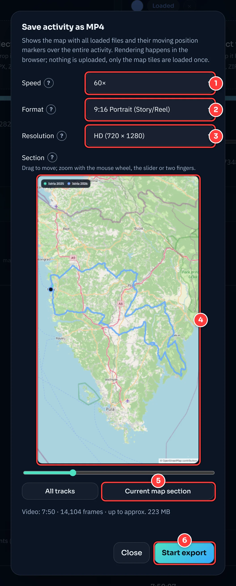
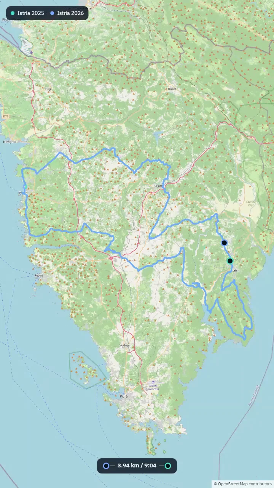
- Speed. 60× means: One minute of activity takes one second in the video. The default is the lowest setting at which the video is at most ten minutes long.
- Format. 16:9, 4:3, and 1:1, as well as the portrait formats 4:5 and 9:16 (stories, reels).
- Resolution. Measured on the short side: Preview (360), HD (720), or Full HD (1080). The pixel count is in parentheses.
- Section. The preview shows what will be visible in the video. Drag to move, zoom with the mouse wheel, the slider, or two fingers. “All tracks” fits everything into the frame.
- Current map section takes over the area you have currently set in the large map.
- Start export. Below the fields you see the length and the maximum possible size of the file. With “Cancel”, you can stop at any time, and nothing is saved.
Good to know: The file names in the legend are exactly the display names you assigned above. For the export you need a current Chrome, Edge, or Firefox browser with video support (WebCodecs) and a file with GPS data. The map tiles are loaded from the internet once for this. At the same settings, Firefox produces larger files than Chrome and Edge.
On your phone
FITcomparer also works on a smartphone. The cards are stacked, and the file picker shows all files, so .fit files and ZIPs from the Downloads folder can be selected as well. You scroll wide tables sideways. You open the explanations with a tap and close them with a tap elsewhere.
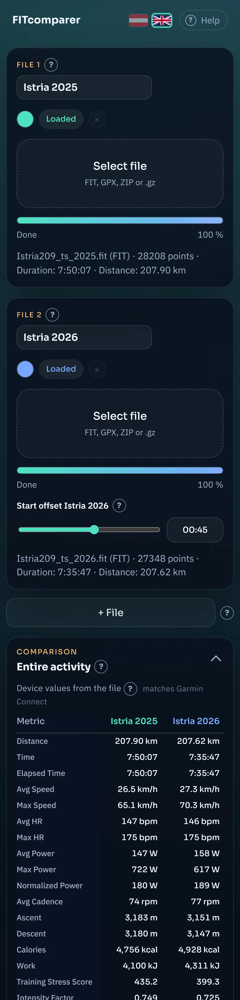
Device or calculated? Why the values differ
A FIT file contains two different things:
- the per-second values (“records”): position, elevation, heart rate, power, and more, once per second.
- a summary (“session”): totals and averages that your device calculated itself at the end of the activity. Garmin Connect and other manufacturers’ apps show these numbers.
FITcomparer shows both separately. The device values are the summary and match Garmin Connect. The calculated values come from the per-second values. Only they are possible for arbitrary sections, because there is no device summary for a time or distance window. That is why the calculated table deliberately does not match every row down to the decimal place.
How big are the deviations?
Measured on four activities (two day tours and two long ultra rides) compared to the device values:
| Metric | Deviation | Why |
|---|---|---|
| Distance | ±0.0% | Identical: Both come from the same distance counter. |
| Avg HR | −0.2 to +0.8% | Average over the per-second values. |
| Avg Power | −0.6 to −1.7% | The device sums power internally at a finer resolution than the per-second values it stores. This cannot be recovered from the stored seconds. |
| Normalized Power | −0.05 to −0.9% | Same cause. The formula itself is the standard one (30-second average, fourth power). |
| Avg Cadence | +0.1 to +1.2% | As with Garmin, coasting phases at 0 rpm do not count toward the average. |
| Ascent and Descent | +0.1 to +1.9% | Elevation is stored to 0.2 m accuracy and is noisy. Without smoothing, the totals would be around 5% too high. That is why it is smoothed over ±5 seconds. |
| Max Speed | −0.4 to −2.9% | The same smoothing takes a little height off short peaks. |
| Avg Speed | 0 to −3.5% | We divide the distance by the elapsed time, Garmin by the timer time. For activities with longer pauses, this makes a difference. |
Time and Elapsed Time: The device table separates the two. “Time” is the timer time (without pauses), “Elapsed Time” is the time from start to end. For an activity with a 31-minute pause, they were 14:33:20 and 15:04:19 in our test.
The device value is the reference if you want to compare the number with Garmin Connect. The calculated values are the right choice when you compare sections with sections, because there all files are calculated in the same way.
Privacy and external services
Your activity files never leave your browser. Reading, calculating, drawing, and even rendering the video all happen locally. The app itself has no upload and no user account, sets no cookies, and contains no analytics scripts.
So that the page looks right and works, your browser does load content from other servers, though. These operators see your IP address and the respective request:
| Service | What for | When |
|---|---|---|
| OpenStreetMap (tile.openstreetmap.org) | Map tiles | continuously while the map is displayed, in the export dialog, and during video export. The operator can thereby see which map section you are viewing. |
| unpkg.com | Leaflet map library | when the page loads |
| cdn.jsdelivr.net | Chart.js charting library | when the page loads |
| esm.sh | FIT reader, ZIP extractor, MP4 muxer | when the page loads, the MP4 muxer only at export |
| Google Fonts | Fonts | when the page loads |
FAQ and troubleshooting
- The file won’t load.
- FITcomparer reads FIT, GPX (also as .gz), and ZIP with exactly one activity. TCX is not supported. If there is an error message under the file card, it tells you what the cause is.
- “The ZIP contains multiple activities” or “Full export” appears.
- Export the activity individually via the gear icon → “Export File”, or unzip the archive and choose the .fit file you want.
- The values differ from Garmin Connect.
- Look at the first table, the “Device values from the file”: They match Garmin Connect. The second table is recalculated and deliberately deviates slightly, see measurement methodology.
- There is no device values table.
- It appears only if at least one loaded file is a FIT file with a summary. For GPX files, it is missing.
- The “Save as MP4” button is gray.
- Either no file with GPS data has been loaded yet, or your browser does not support video export. In that case, use a current Chrome, Edge, or Firefox browser.
- The export aborts or is huge.
- Choose a higher speed or a lower resolution, and the video becomes shorter and lighter. The expected size is shown below the fields in the dialog; from about 1.5 GB, the export can no longer be started.
- The video plays in the browser but not in the Windows player.
- Re-export it with the current version of FITcomparer. Older exports from Firefox contained a faulty video description, which browsers tolerate but the Windows player does not.
- The map stays gray.
- The map tiles come from the internet (OpenStreetMap). Without a connection or with blocked requests, the background stays empty, but the route and markers still appear.
- On my phone, I don’t see my file in the picker.
- On touch devices, the picker shows all files. Look in the “Downloads” folder for the ZIP from Garmin Connect. If it was saved in another app, tap the menu in the picker window and choose the right storage location.
- The table is too wide on my phone.
- Swipe it sideways. The device table with two files usually fits without scrolling, while the calculated table with the deviation badges is wider.
Credits and license
FITcomparer is free software under the MIT License. You can find the source code on GitHub.
FITcomparer builds on these works:
| Component | Purpose | License |
|---|---|---|
| OpenStreetMap | Map data, © OpenStreetMap contributors | ODbL |
| Leaflet | interactive map | BSD-2-Clause |
| Chart.js | Graph | MIT |
| fit-file-parser | Reading FIT files | MIT |
| fflate | Unzipping ZIP files | MIT |
| mp4-muxer | Writing MP4 files | MIT |
Garmin and Garmin Connect are trademarks of Garmin Ltd. or its subsidiaries. FITcomparer is not affiliated with Garmin. The screenshot of the Garmin Connect interface serves solely to explain the export.